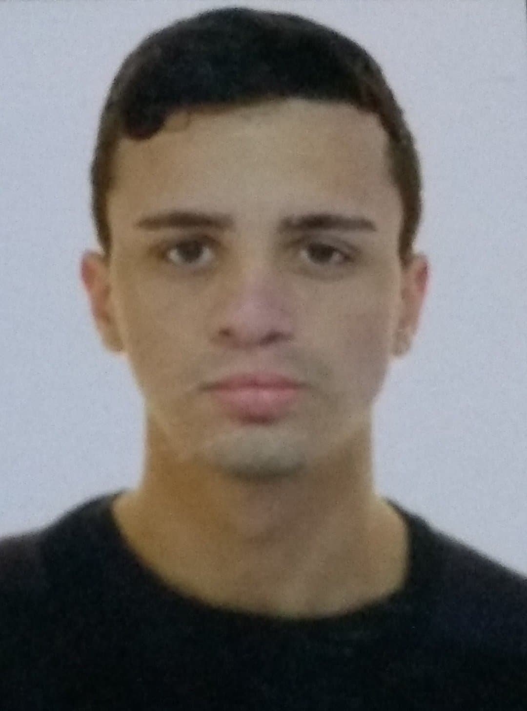

Portfólio
Lucas Silva Friedrich

Lucas Silva Friedrich
Objetivo
Profissional técnico, automotivado, de visão e focado em resultados. Desenvolveu e aplica em seu cotidiano, os princípios de dever e qualidade nas atividades, das quais se vale para reduzir desvio de tempo, aumentar ganhos e tornar- se um profissional voltado a atender as expectativas de seu empregador.
 |
 |
NTC.LUCASSILVA@GMAIL.COM |
(51) 9 9848 7433 |
|---|---|
Brasileiro, Solteiro, 20 anos, CNH: B |
Rua Benjamin Constant, 395 / Bairro: Boa Vista – Sapucaia do Sul – RS – Cep: 93230-080 |
Formação
Ensino médio |
Ensino técnico |
Centro Educacional Uniseriado – Concluído |
Colégio São Lucas/ULBRA – Em andamento. Turno: Flexivel. Módulo: I |
|---|
Cursos
 |
|
School Of Net |
Instituto Federal de Educação, Ciência e Tecnologia do Rio Grande do Sul |
Lógica de programação; |
Marketing Público; |
|---|